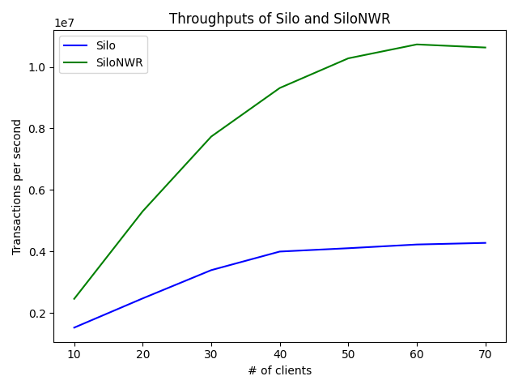

- Generated by
 1.8.17
1.8.17
|
LineairDB
0.1.0
|
LineairDB is a C++ fast transactional key-value storage library. It provides transaction processing for multiple keys with guarantees of both strict serializability (linearizability) and recoverability (see Correctness to further details of these properties). LineairDB provides some novel concurrency-control protocol that promise scalability for many-core CPUs machines, especially in (or even if) write-intensive and contended workloads (see NWR to the detail of the protocols or Benchmark Results).
LineairDB fully adopts and benefits from the Epoch Framework [Tu13, Chandramouli18]. Briefly, the epoch framework divides the wall-clock time into epochs and assign each epoch into each transaction. (i.e., epoch framework groups running transactions). LineairDB uses the Epoch Framework in the followings:
The Epoch Framework provides advantages in both correctness and performance.
LineairDB assumes that the correctness properties of DBMS consist of strict serializability and recoverability.
The Epoch framework is favorable for both property:
Why do we need "strict" serializability? LineairDB is an embedded single-node database and thus is (not strict) serializability good enough? Note that serializability theory permits to change orders among non-concurrent transactions. For instance, a serializable database allows all transactions to read from and write into any arbitrary version. More precisely, a transaction may always read the initial values, even if there exist some newer versions, and also can always write older versions than the initial values. Most users can not accept this behavior because even if several years may have passed after the initialization of DBMS, not strictly serializable databases allow such unacceptable results. Concurrency control protocols satisfying strict serializability never change the order of transactions when they are not concurrent.
LineairDB provides some novel extended concurrency control protocols, named _"NWR"_ (e.g., LineairDB provides Silo [Tu13] and its extended protocol, named SiloNWR). NWR-protocols have great performance in write-intensive and contended workloads, that includes _"blind-writes"_. The scalability of NWR extension is obtained by omitting unnecessary write operations. Briefly, LineairDB reorders concurrent transactions and omits some write operations. Remind that transactions in an epoch are grouped; the nature of epoch-based group commit is favorable for NWR; Since transactions in the same epoch are committed at the same time, we can say that transactions in the same epoch are concurrent, and can be reordered.
NWR can omit blind write operations, which are insert or no-read update-only operations. If you have blind write operations in your use case, choosing NWR-protocols is recommended strongly. Because unnecessary write operations are omitted, LineairDB improves the processing speed of transactions dramatically.
The correctness of transaction processing in LineairDB is proved based on the multi-version serializability theory. See the research paper at this link.
The following is a simple example code of how to use LineairDB. Here we are not dealing with a multi-threaded environment; however, LineairDB is basically designed to be thread-safe. That is, it is allowed to invoke LineairDB::Database::ExecuteTransaction by multiple threads in parallel.
The LineairDB project roadmap is available at Roadmap
The followings are our benchmark results. This is a modified benchmark of YCSB-A; unlike official YCSB in which a transaction operates a single key, each transaction operates on four keys in our benchmark.
This benchmark is executed in the following environments:
| CPU | four Intel Xeon E7-8870 (total 144 logical cores) |
| Memory | 1TB (no swap-out) |
| YCSB Table size | 100K |
| YCSB Record size | 8-bytes |
| Epoch size | 1000ms |
| Contention (θ) | 0.9 (highly contended) |
| # of threads to process txns | 70 |

SiloNWR, our novel concurrency control protocol, achieves excellent performance by omitting transactions without exclusive lockings. Note that YCSB-A has an operation ratio of Read 50% and (Blind) Write 50%; that is, this is a fairly favorable setting for NWR-protocols. If your use case is such a blind write-intensive, then LineairDB can be a great solution.
1.8.17